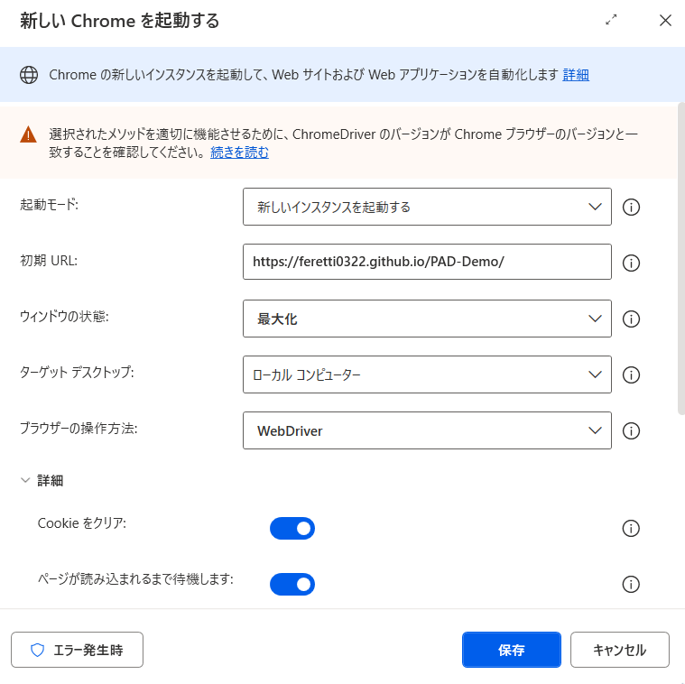
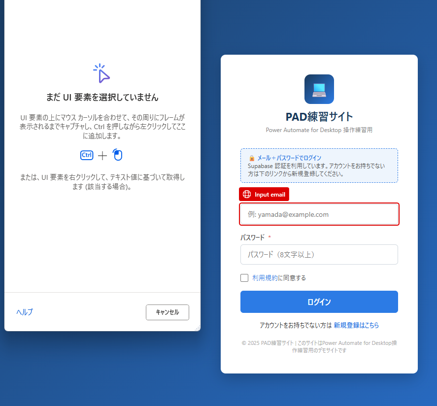
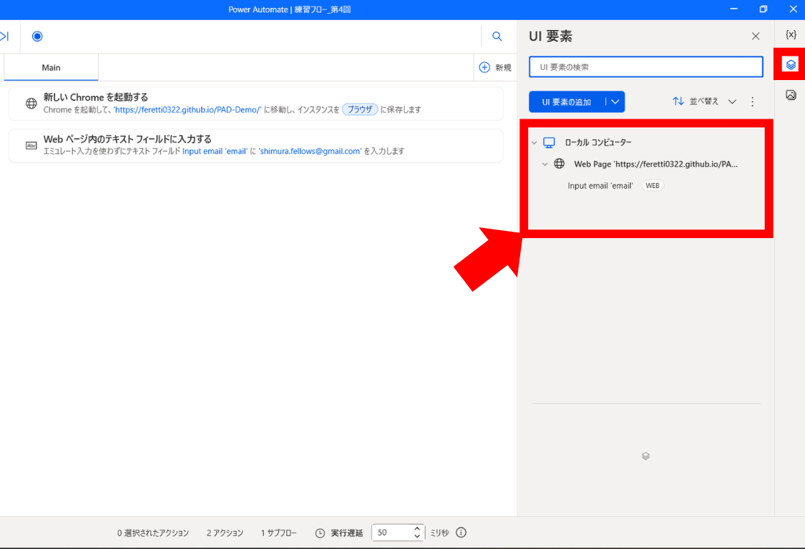
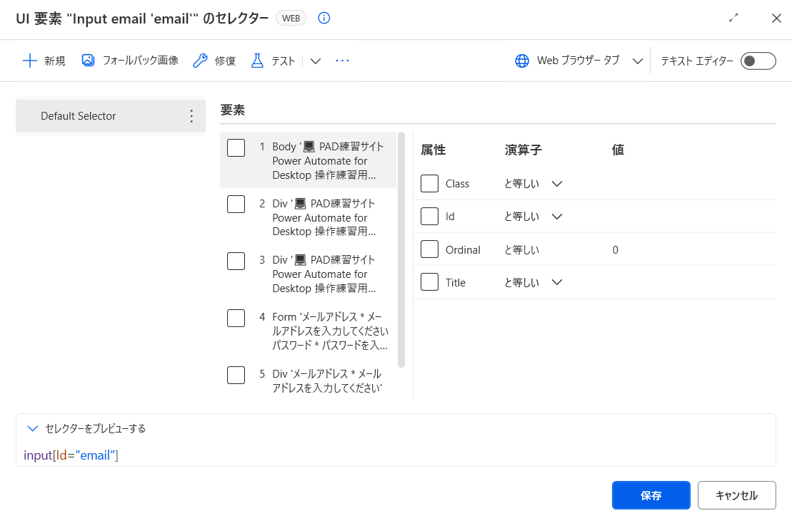
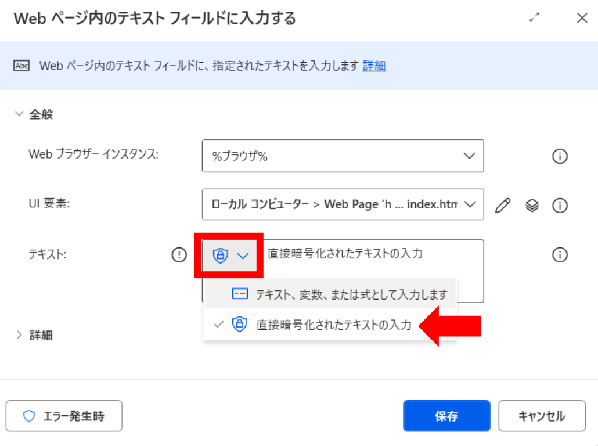
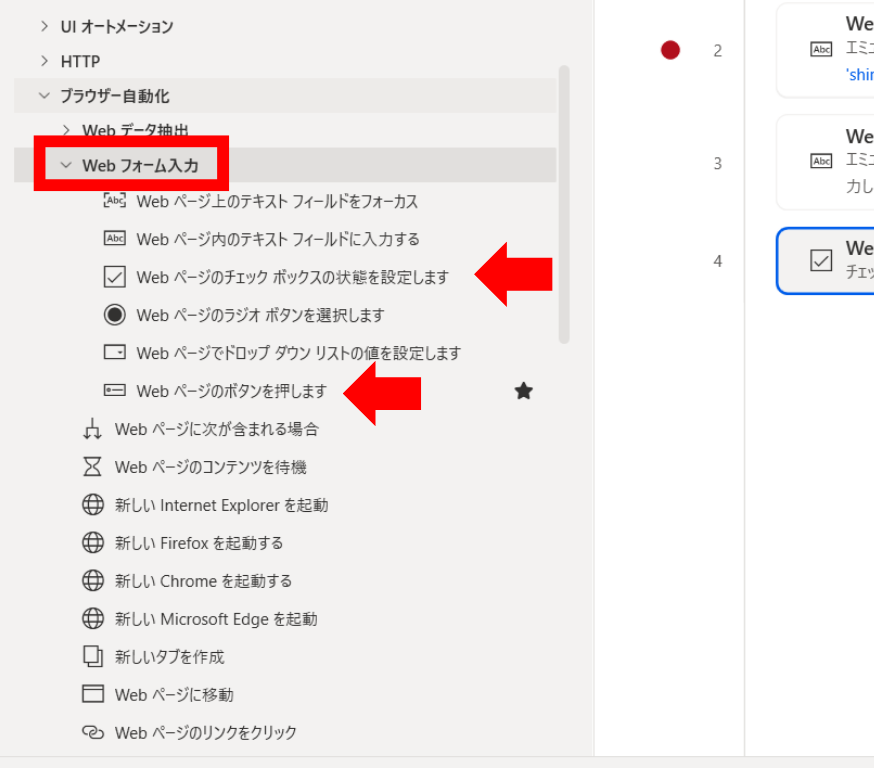

第4回 ブラウザ自動化① 〜WebDriver でログイン＋機密情報テキスト〜
Web ブラウザの自動操作の基礎を WebDriver 経由前提で完全に押さえる回です。
最終演習で使う「メール＋暗号化PW＋規約チェック＋ボタン」のログインフローをここで完成させます。
事前準備
- 第1回 で ChromeDriver が
%LOCALAPPDATA%\Microsoft\Power Automate Desktop\WebDrivers\に配置済み - 自分のメール／パスワード（第0回で signup したもの）
A. WebDriver でブラウザを起動する

「新しい Chrome を起動する」アクションを配置し、「操作方法」プルダウンで「Webdriver」を選択。URL には以下のデモサイトのトップを指定します：
https://feretti0322.github.io/PAD-Demo/ にアクセスするフローを作り、実行ボタン（▷）を押してブラウザが立ち上がった状態にしておきましょう。※ この後の 4-B で UI 要素ピッカーを使うので、立ち上げた Chrome は閉じずにそのまま残しておくのがポイントです。
B. メールアドレスを入力する 〜UI 要素ピッカーの使い方〜
UI 要素ピッカーは Chrome の拡張機能が ON になっていないと反応しません。4-B に入る前に、必ず下記の手順で拡張機能を有効にしてください。
- 4-A のハンズオン課題①で立ち上げた Chrome（デモサイトが開いているもの）の「+」ボタンで新しいタブを開く
- 下の Chrome ウェブストアの URL にアクセス：
- 「Chrome に追加」をクリック → 確認ダイアログで「拡張機能を追加」
- 追加後、Chrome 右上のパズルピース 🧩 アイコンから 「Microsoft Power Automate」 がオン（青色）になっていることを確認
この拡張機能が入っていれば、次のステップで PAD からブラウザに切り替えたときに赤枠ハイライトが出るようになります。

左のアクション一覧から「ブラウザー自動化 ＞ Web フォーム入力 ＞ Web ページ内のテキストフィールドに入力する」をフロー上にドラッグ＆ドロップします。設定ダイアログが開いたら、「UI 要素」 欄の右にある ▼ →「UI 要素の追加」 をクリック。
② UI 要素ピッカーが起動する
画面に 「UI 要素ピッカー」 のオーバーレイが出ます。この状態のままブラウザのどこかを 1 回クリックすると、以降マウスを乗せた要素が赤枠でハイライトされるようになります。
③ ブラウザ上で対象の部品にマウスを合わせる
Chrome 側の メールアドレス入力欄 にマウスカーソルを合わせると、その要素が 赤い枠線 で囲まれます（左の画像の状態）。
この赤枠が「いま PAD に覚えさせようとしている部品」です。狙いたい欄に正しく枠が乗っているか必ず目で確認してください。
④ Ctrl ＋ クリックで要素を確定する
赤枠が正しい位置に乗ったら、Ctrl キーを押しながら左クリックします。これで PAD に「この部品を覚える」と指示が入ります。
※ ただクリックすると Web ページのリンクが反応してしまうので、必ず Ctrl を押しながらクリック。
「Web ページ内のテキストフィールドに入力する」アクション設定で：
- UI 要素：先ほど取得したメール入力欄を選択
- テキスト：自分のメールアドレス（例：
shimura.fellows@gmail.com）

PAD の編集画面に戻ると、右側の 「UI 要素」ペイン に取得した要素が追加されています（例：
Input text 'email'）。この要素はフロー内のどのアクションからでも再利用できます。

UI 要素を右クリック →「編集」を選ぶと、PAD が内部で覚えているセレクタ（例：
#email や input[type='email']）を確認できます。ふだんは触らなくて OK。ただし「要素が見つかりません」エラーが出たときは、ここを開いてセレクタが想定どおりか確認するクセをつけておくと、原因が一発で分かります。
C. パスワードを『直接暗号化されたテキスト』として保持する（必修）

通常のテキスト入力欄にパスワードをそのまま書くと、フローを誰かに共有したときに PW も漏洩します。PAD にはテキスト欄横のプルダウンで「直接暗号化されたテキストの入力」という選択肢があり、これを選ぶと値が暗号化されてフロー編集画面でも復元できなくなります。
- 「Web ページ内のテキストフィールドに入力する」アクションをもう1つ配置
- UI 要素ピッカーで パスワード入力欄 を取得（4-B と同じ手順）
- テキスト入力欄の右側にあるプルダウン（▼）をクリック
- 「直接暗号化されたテキストの入力」を選択
- パスワードを入力して保存 → 暗号化された状態で保持される
D. チェックボックスON＋ボタンクリック

- Web ページのチェックボックスの状態を設定します：UI 要素ピッカーで 利用規約チェックボックス を取得 → 状態＝オン
- Web ページのボタンを押します：UI 要素ピッカーで ログインボタン を取得 → クリック
pad-overview.html に遷移することを確認してください。
E. ログイン失敗時の動作
故意に PW を間違えてログインすると、画面上にエラーメッセージが表示されます。PAD の初期設定では、何かしらエラーが起きた際は自然に全体中断する仕組みになっているため、ログイン失敗のときも特別な処理を追加しなくてもフロー全体は止まります。
「個別スキップ」「リトライ」など、エラー時の挙動を細かく制御する設計は 第6回（制御構造） で扱います。
解答例 / 完成フローテキスト
本回のハンズオン課題の完成フローテキストをダウンロードして、PAD 編集画面に貼り付けてください。
⬇️ lesson-4.txt をダウンロードよくある詰まりと FAQ
対処法：WebDriver で起動した Chrome に PAD の拡張機能をインストール → その Chrome を閉じずに「UI 要素取得用ブラウザ」として残しておくと作業しやすくなります。